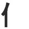
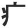

| CCW | 40 | CULTURAL CODE WORD : a word which has no real English translation, because it represents a state of mind unique to Japan. It’s useful to learn these words because they teach you about the Japanese mentality. I’m not trying to teach you all of the cultural code words – there’s plenty of books out there already. But when it comes up, it comes up. |
| ??? | 0 | I don’t know what this word means! Help! |
| JERK | 111 | JERK KANJI have 2 (or more!) unrelated, yet commonly used, meanings.
|
| BETA | 354 | The opposite of SOLO – BETA kanji are only found in compound words, (jukugo）. ‘Beta-beta’ in Japanese means “sticky,” and BETABETA kanji hate to be alone – they like to ’stick’ to other kanji. This is good news for you, because it means you don’t need to study their KUNyomi! |
| BOOBOO | 7 | A word that most people use wrong gets a BOOBOO tag. For instance, 明けましておめでとう！(あけましておめでとう） is usually translated as "Happy New Year!" But if you use this before Jan. 1st, you might as well hold a huge flag up over your head that says NOOB. Or 話す（はなす, which means ‘’speak’) Only noobs say "あなた は にほんご を 話す？ー ’Do you conversation Japanese?’ You’re supposed to say ”あなた は 日本語を 喋る？”( あなた は にほんご を しゃべる？－’Do you speak Japanese?’) So 話す also gets a BOOBOO tag. |
| SUFFIX | 1 | |
| PRE | 42 | Prefix |
| NUBI | 23 | "Never Used By Itself" - a kanji which is only used in a certain expression or idiom. The idea behind this tag, as always, is to stop you from talking like a noob. And, I promise to always teach you the expression or idiom. |
| DUPE | 161 | You may have noticed when using your "electronic dictionary" that sometimes you'll enter a word and 2 or even 3 kanji pop up - ALL WITH THE SAME DEFINITION AND THE SAME PRONUNCIATION! And you wonder, "Which am I supposed to use?" You have run smack-dab into one of these Only In Nihongo boondoggles: DUPLICATE KANJI! For example, 堅い、硬い、and 固い are all かたい and they all MEAN different nuances of 'hard.' As far as I know, there is nowhere - no book, no website - that has listed and dealt with this category of words. So I made an APPENDIX that explains all the nuances. |
| SARC | 24 | Some people say Japanese don’t “get sarcasm,” because they don’t understand the “I’ll say the opposite of what I mean and it never stops being funny” concept so beloved by Americans. Japanese sarcasm tends towards subtle irony ,and can be pretty rewarding if you can determine that a joke has, in fact, been made. To help you pick up on the difference between Eastern and Western sarcasm, I’ve tagged some of the better / more obvious examples. For instance, 党 means ‘political party’ – but someone who loves candy is called ‘甘党’ （’member of the Sweet Party’) |
| KUNKUN | 145 | a particular kind of FUCKED PRONUNCIATION. Jukugo which don’t have okurigana generally use the ON-yomi. But KUNKUN words use the KUN yomi anyway, in defiance of the rules. For example: 靴下 (kutsushita – socks), 下着 (shitagi – underwears), and 悪口 (waruguchi – to badmouth someone) Words with OKURIGANA are almost always KUNKUN anyway, so I don’t bother putting this tag on them. |
| LAZY | 58 | some kanji have the same ON- and KUN-yomi. I say that is not nearly arbitrary or complicated enough – why did they pass up a perfectly good chance to mess with foreigners’ minds? they must have felt LAZY. |
| NEO | 37 | Remember how people always laugh at the French because they outlawed the word “le hamburger,” and they don’t say ‘email address,’ they gotta say, ‘adresse de courrier electronique?’ When an English word gets popular, they stone cold invent a French version, rather than polluting their language with outside terms! Well, back in the pre-WWII days, Japan did the same thing. Today if they want to import a new word, like ‘customer support’ they’ll use katakana: カストマー・サッポト。 But back in the Pearl Harbor days, speaking the words of inferior mongrels was pretty gauche. What they’d do instead was, break the foreign compound word down into its basic parts, then find the kanji which corresponded to those parts, and combine those kanji to make a new Japanese word – a NEOLOGISM. For instance, wheel-chair became 車椅子 （car-chair), and space-ship became 宇宙船 (universe vessel). Of course, these ‘pure Japanese’ words were written in Chinese, but whatever. When have racists ever made sense? |
| FR | 32 | FR is short for FUCKED ROOTS. They say that kanji are ‘windows into the past,’ meaning that since they look like the things they depict, we can see the values of the ancient society that made them. However, in today’s politically correct times, that window is often as embarrassing as the screen of an old Western TV playing reruns of Sambo and Amos and Andy. This is evident in kanji like wife (奥さん), which famously translates to, ‘back of the house person,’ or 乙, which has two meanings: ’second place’ and ‘girl.’ Oh no you di’int!!!! |
| PN | 187 | PROPER NOUN – this kanji is often used in names of people or places. Actually, most kanji CAN be used in proper nouns, but certain ones appear so often you should learn them just for that alone! And THOSE guys get the PN tag. Incidentally, Proper nouns in Japanese usually but not always take the KUN reading. |
| FP | 116 | FP stands for FUCKED PRONUNCIATION – the Japanese equivalent of English’s silent ‘p’ in ‘psychology’ : words like 田舎 (countryside), which, according to the ONyomi of its respective kanji, should be pronounced でんしゃ. . .but it’s actually pronounced いなか. Or お土産 (souvenir) , which you’d think would be pronounced おどさん, but it’s actually pronounced おみやげ! |
| SIDEKICK | 136 | A variation of the BETABETA kanji, the SIDEKICK is a kanji that is 99% of the time, ONLY USED WITH ONE SPECIFIC OTHER KANJI - in ONE SPECIFIC COMPOUND WORD.
|
| SOLO | 203 | only used by itself (no ONyomi)
|
| PK | 143 | primary kanji (i.e. it can't be broken down into smaller radicals) |
| NP | 193 | (newspaper word) All languages have a very formal version, even English: (“Your Honour, if it please the court to introduce the writ of habeas corpus?” “Indubitably, my good chap!”) But as usual, Japanese has to take a common linguistic phenomenon and bug it out until it’s totally incomprehensible to foreigners. So, in ADDITION to the formal Japanese (used only when talking to the Boss) , there’s a WHOLE ‘NOTHER SET OF WORDS which are used in very informal, every-day settings: announcements on the loudspeakers of train stations, television news reports, newspapers, etc. Some of these words are the most common and useful in Japanese, and yet most people will never ever say them. These words are only HEARD or READ, but they’re not SAID. I call these words NEWSPAPER WORDS, although they might be better called ANNOUNCEMENT WORDS. A common noob mistake is when a foreigner (having just learned the words) says them out loud. The foreigner figured that since they describe common things like trains leaving the station, they must be useful. Ha! NOOOOB. To make matters even worse, most every NEWSPAPER WORD has a more casual equivalent that regular folks use, and you gotta learn those too! |
| STRONG | 90 | is short for ‘STRONG RADICAL,’ which means ‘radical that usually controls the pronunciation of any kanji in which it is a component.’ For example, Both 可 (on-yomi: KA) and and 中 (on-yomi: CHUU) are STRONG.
|
| F | 57 | formal - you only use this at work or at your boyfriend's parents' house. |
| DUH | 50 | a kanji that (surprisingly) looks like what it represents: 山(mountain), 口(mouth), 木 (tree), or 三 (3).
|
| JERK RADICAL | 8 | Jerk RADICALS mean one thing when used as a SOLO kanji, and another thing when used as a radical inside a bigger kanji.
|
| MR | 19 | Short for MUTANT RADICAL: some very common PRIMARY KANJI change shape when they are used as radicals. They tend to get squished and simplified. 水 becomes 火 becomes , and 人 becomes  .These simplified, squished versions are MUTANT RADICALS. |
| KUN ON | 42 | Jukugo (compound words) usually use the ON-yomi- unless they have OKURIGANA, in which case they usually use the KUN yomi. But 'KUN ON' words are jukugo which mix kun and on yomi. These are the worst because you just have no clue. |
| OBSOLETE | 18 | Unfortunately, a lot of kanji which are not used anymore as words anymore . . . are still indispensable as radicals, so you still have to learn ‘em. Fortunately, (unlike other guys), I actually TELL you you don't have to bother learning the kanji as a kanji. |
| KUN-ON | 0 | |
| 1/2 KANA | 191 | in practice, this word written in hiragana or katakana, not in kanji form, half the time. |
| KIDS | 21 | These words, while common, are baby-talk, so don't use them at work unless you work at some "adult baby role-play" place like my friend owns. |
| SAME ON | 7 | The kanji's ON-yomi is the same ON-yomi as one of the radicals in it - usually a STRONG RADICAL. For example, 衣 (cloth) is pronounced "I". 依 (rely on) has the cloth radical and is also pronounced "I"
|
| SYMBOLIC | 38 | If a symbolic radical is inside of a kanji, the meaning of the whole kanji will be pretty similar to the meaning of the symbolic radical. This is a helpful tool if you encounter a kanji you can’t read!
 (sickness) is used in words like 病(sick) 、 痛 (pain)、 疲 (fatigue)、 and 痴 (pervert).火 (fire) is used in words like 焼 (roast)、 燃 (burn)、 爆 (explode)、 and 災 (natural disaster). One more thing: SYMBOLIC RADICALS are usually on the left side, STRONG RADICALS are usually located on the right side of a kanji. So if you are stumped by a new (or, heh, forgotten) kanji, check the right-side radical for clues to its on-yomi. And check the left-side radical for clues to its meaning. |
| COUNTER | 47 | One of the more psycho things about Japanese is that EVERY OBJECT EVER uses ENTIRELY DIFFERENT WORDS for counting itself. And each method of counting has its OWN KANJI. For example, sheets of paper are 一枚、二枚、三枚 （ichimai, nimai,sanmai), but oranges and apples are 一個、二個、三個 (ikko,niko, sanko)。
|
| SUF | 103 | Suffix |
| NOKURI | 17 | the most spectacular, insidious, treacherous, downright evil form of FUCKED PRONUNCIATIONS. You remember okurigana? Those hiragana that hang off the tail ends of compound kanji? 繰り返し、落ち着け, 食べ放題, etc? Well sometimes Japanese people get tired of writing the okurigana. They don’t write it BUT THEY STILL PRONOUNCE IT, which makes it basically IMPOSSIBLE to find that word in your dictionary! Words like 取引 (torihiki :取り plus 引き , meaning to haggle) . . .or 受付 (uketsuke : from 受け plus 付け). How the hell are you supposed to know? Anyway kanji with OKURIgana that have become NOkurigana get the NOKURI tag. |
| $$$ | 310 | This is the most commonly used synonym of the bunch. |
| GGG | 0 | Only used in a good way. |
| BBB | 0 | Only used in a bad way. |
| PPP | 55 | Used about people, not things. |
| TTT | 53 | Used about things, not people. |
| SITU | 20 | Used about situations. |
| LIT | 17 | Literary- used in poems or novels, not conversation. |
| 1/2 KANA KIDS | 1 | |
| PK SYMBOLIC ILL PAIR | 1 | |
| BETA JERK COUNTER | 0 | |
| COCK ILL PAIR BETA PK | 0 | |
| NUBI SUFFIX COUNTER | 1 | |
| NUBI KANA | 1 | |
| BETA SUF | 0 | |
| JERK BETA SUF | 0 | |
| ILL PAIR | 97 | Yet another only-in-Japanese type of problem : Synonyms where the kanji look as physically similar as their meanings! “Hey, a few foreigners managed to suss out the difference in the meanings of these synonyms. We can’t let that slide. . . why don’t we make them look almost identical too?? That’ll slow ‘em down . . .IN YOUR FACE, FOREIGNERS!!!” Classic ILL PAIRS ? Here’s a few:
|
| ABU | 38 | abunai (危ない) means ‘dangerous!’ ABUNAI kanji fall into 3 types:
Note that there's not a lot of kanji that are offensive by themselves (although there are plenty of kanji with politically incorrect roots, which might be offensive or funny to gaijin). But, when you combine two or more kanji together, you can make plenty of JUKUGO (compound words) that will offend people! If you know the individual kanji, it's easy to recognize clearly offensive jukugo, even if you have never seen them before - 陰唇 (inshin) literally means 'shadow lips' or 'hidden lips' and 巨根 (kyokon) literally means 'giant root.' Take a wild guess, Einstein. But, Japan being Japan, a lot of offensive or embarrassing terms are even more subtle. For instance, 事務所 (literally, 'office') is usually just that: an office. But often it's used to mean Yakuza, since mobsters here are as official and well-organized as big businesses. Welcome to Japanese sarcasm. Another example: 犯す (okasu). According to your dictionary, this means, 'to perpetrate.' What your dictionary DOESN'T tell you is that 犯す is almost always used in the context of rape. (also, it doesn't help that it sounds almost exactly like 'wake me up' (起こす, pronounced oKOsu), which has resulted in more than one embarrassing incident for me, but probably you don't have that problem). Fortunately, Kanji Damage has a solution for you: offensive or dangerous kanji/jukugo are tagged with the label ABU (short for abunai 危ない, which means 'Danger!'). And, in the cases of words like 事務所 or 犯す, I will explain specifically why they might get you into trouble. |
| KANA | 112 | Yet another only-in-Japanese headache: All kanji are written as hiragana. . . TO SOME EXTENT. So, should you even bother learning the kanji or not??? Textbooks and dictionaries offer no help to the pressed-for-time student. For instance kanji words are generally written as hiragana in kids’ books, or simply to emphasize the word (like all-caps in English). Then there’s words such as 帽子 (hat) or 沢山 （hella) which are written as hiragana about half the time. Words like 居る (to live) or 可愛い (cute) are usually hiragana unless it’s a really formal (or pretentious!) book. Words like 馬鹿 (idiot) or 凄い (deeeyamn!) are, inexplicably, usually written as KATAKANA.
Unlike some books or flashcards, I cut these words out so you don’t waste your time.
|
| COCK BETA | 1 | |
| DUPE SIDEKICK | 1 | |
| BETA JERK | 1 | |
| DUPE PN SIDEKICK | 1 | |
| COCK | 32 | I call it that because it’s even worse than a jerk . Like say the kanji is used in 20 compound words, and all 20 have the same general meaning (call it meaning A). Or it’s used in 20 words and in all of them it’s pronounced the same way (call it pronunciation A). The only exception is this ONE word that is pronounced in a fucked-up way and means something else (call it meaning B) totally unrelated. And guess what? In normal conversation, the ONLY TIME YOU ’LL EVER USE THE KANJI IS WITH MEANING ‘B’! |
| PN SUF ILL PAIR COCK | 1 | |
| PN SIDEKICK | 1 | |
| BETA PK | 1 | |
| DUPE JERK PN | 1 | |
| DUPE JERK | 2 | |
| JERK COUNTER | 1 | |
| PK COUNTER ABU | 1 | |
| JERK PN | 0 | |
| DUPE PN | 2 | |
| JERK DUPE PN | 1 |
 KANJIDAMAGE
KANJIDAMAGE